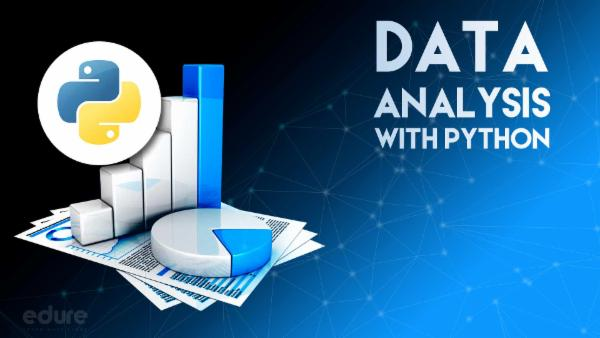

In this project, I used SQL Server to clean and transform a large dataset,
focusing on removing duplicates, handling missing values, and standardizing data formats.
The goal was to prepare the data for accurate analysis and reporting.


I used SQL to explore and analyze datasets, identifying key trends, patterns, and insights to support data-driven decision-making.

I developed Python projects to automate tasks, analyze data, and build efficient solutions, leveraging libraries like Pandas, NumPy, and Matplotlib.
I utilized Excel to organize, analyze, and visualize data, employing advanced functions, pivot tables, and charts to derive actionable insights.

Automated data processing and report generation in Excel using VBA, reducing manual effort and improving efficiency.

I used Power BI to create interactive dashboards and reports, integrating data from multiple sources to provide real-time insights.

I leveraged Tableau to design dynamic visualizations and dashboards, enabling effective exploration of data and communication of key insights.